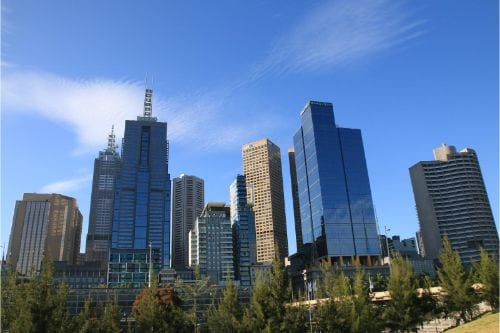
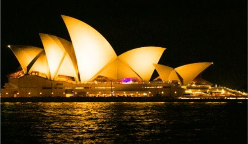

Informacion sobre el pais Australia:
- La palabra Canguro viene de gangurru que significa “No te entiendo” en un idioma de los aborígenes. Se dice que Gangurru fue la respuesta que los nativos dieron a los exploradores de James Cook cuando preguntaron por el nombre del animal.
- Los Koalas son animales nocturnos y pasan entre 16 y 18 horas del día durmiendo
- Los holandeses llegaron a Australia en 1644 (Abel Tasman) y la llamaron la Nueva Holanda. Hasta finales del siglo XIX los holandeses seguían utilizando este nombre.
- También una de las arañas más peligrosas (funnel-web spider). Su veneno puede matar a una persona en menos de 2 horas. Los únicos mamíferos que no son inmunes a su veneno son los monos y los humanos.
- Los primeros europeos que vivieron en Australia fueron presos británicos. El país fue una colonia-cárcel del Reino Unido desde 1787 a 1868.
- Una tercera parte de Australia es desértica (principalmente en el centro).
Sitios de interes en Australia
Australia, sin lugar a dudas, representa un potencial infinito en el turismo, por los distintos lugares, costumbres de su inmensa población, años de historias rodeadas de la belleza natural que para este 2020 brindarán los mejores escenarios del mundo.
En los recorridos por Australia el turista se obliga estudiar su geografía, destacándose las ciudades que van desde su capital Canberra, Sídney, Cairns, Melbourne, Bathurst y Darwin.
Asimismo, están los lugares que los visitantes apreciaran como atractivos turísticos de Australia como son la Casa de la Ópera de Sídney, el Puerto Darling y la Gran Barrera de Coral. Es más, los turistas podrán disfrutar de un clima tropical con lindas playas y un clima de desierto impregnado de magia.
A continuación, observarás los más emblemáticos lugares en Australia, que influirán en favorecer la decisión de las mejores vacaciones en el 2020, y de esa forma apreciar el turismo en todos los tips relevantes que contribuyan con el disfrute en el tiempo que corresponda.
Así que sin más, empecemos con el listado de los mejores lugares turísticos de Australia:
Melbourne.
Es más, un sitio que puedes visitar en el centro es el río Yarra que bordea hasta la parte sur, en cuyos alrededores pasearás por la urbanización Federation Square con sus lindas plazas, y conocerás tiendas atractivas, restaurantes y el famoso tranvía.
En esta espectacular ciudad encontrarás muchas propuestas en gastronomía como el Queen Victoria Market. Asimismo, en las múltiples opciones de hospedaje encontrarás un lugar céntrico como es “Crowne Plaza Melbourne”.

Sídney.
Sídney la ciudad más antigua, más poblada y moderna del planeta, es capital de Nueva Gales del Sur, situada al sureste de Australia justo a orillas de la bahía que lleva su nombre en el Puerto Jackson.
Sídney es parte de los mejores lugares turísticos en Australia, en las cercanías del puerto encontrarán la Casa de la Ópera de Sídney, el Puerto Darling, el Puerto Circular Quay, el Puente de la bahía de Sídney y el Real Jardín Botánico. Es más, apreciarás la plataforma exterior de la Sydney Tower.
Posee una excelente movilidad en tren urbano circular o monorriel. Verás de cerca los canguros en la zona de Hunter Valley y en Pebbly al sur de la ciudad. En Sídney otros de los destinos turísticos son sus conocidos zoológicos con el Wild Life Sydney Zoo (koalas), Zoo Taronga Puerto y el Parque Nacional Cabo Le Grand.
Sídney Opera House.
La Casa de la Opera de Sídney u Ópera de Sídney está situada en la ciudad de Sídney en el estado de Nueva Gales del Sur, Australia.
La Casa de la Opera de Sídney es uno de los sitios que ver en Australia. En este viaje conocerás la parte cultural de Sídney, visitando las modernas instalaciones y espacios del edificio construido en el siglo XX. Fue declarado Patrimonio de la Humanidad, ya que representa el escenario ideal para obras musicales, teatro, ballet y ópera.
Estarás inmerso en este innovador y emblemático lugar, que se inauguró en 1973 bajo el diseño del arquitecto danés Jorn Utzon. Observarás el detalle de las conchas que forman el techo, las bóvedas, los salones de conciertos, los 6 teatros y salones de ensayo. Asimismo, se ofrece al visitante servicios de restaurantes y tiendas pequeñas.

Great Ocean Road.
Great Ocean Road o la Gran Carretera Oceánica, es una ruta de 243 kilómetros que se encuentra a lo largo de la costa sureste, estado de Victoria, Australia, entre las ciudades de Torquay y Allansford.
Esta famosa carretera es uno de los atractivos de Australia. De verdad que podrás conocerla en un espectacular recorrido, donde podrás ver paisajes y vistas impresionantes. A lo largo del recorrido, tendrás la oportunidad de ver lugares como la playa de la bahía de Louttit. Asimismo, podrás detener el vehículo donde viajas, y observar las montañas entre los pueblos de Anglesea y la Bahía Apollo.
Conocerás la zona del Port Campbell que es espectacular por las formas extrañas de las rocas, producto de la erosión del mar, y donde podrás llegar caminando con los guías que acompañen a los turistas. Un sitio turístico a observar, son las formaciones de rocas famosas llamadas los Doce Apóstoles.
Historia de Australia
Se cree que los aborígenes australianos llegaron en barco desde el sudeste asiático hace unos 50.000 años. Cuando los europeos llegaron a Australia y la colonizaron, cerca de 1.000.000 de aborígenes vivían en el territorio y se dedicaban a la caza y a la agricultura.
Durante el siglo XVII varios exploradores llegaron a la costa de Australia y en 1770 el capitán James Cook desembarcó y reclamó el territorio para la corona británica. A partir de entonces, se utilizó como centro penitenciario de presos procedentes de Gran Bretaña. En 1790 llegaron los colonos libres para poblar la región y fueron desplazando a los aborígenes, debido a la confiscación de las tierras y a las enfermedades.
Cultura de Australia
El éxito y la calidad de la educación australiana se refleja en los más de 450 mil estudiantes internacionales que cada año deciden estudiar en este país. La contribución económica y cultural que los estudiantes internacionales representan para Australia es reconocida tanto por el gobierno como por la sociedad en general.
En particular, los australianos manifiestan un profundo interés por los estudiantes latinoamericanos y su cultura. La gastronomía y la cultura latina, así como el idioma español, gozan de gran preferencia entre los australianos que cada vez más quieren aprender sobre esta interesante cultura.